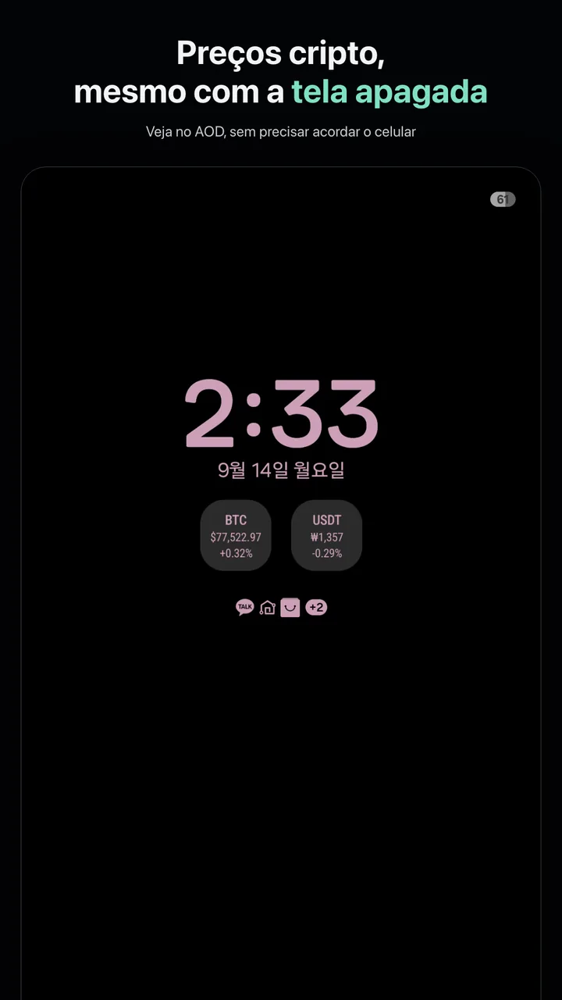
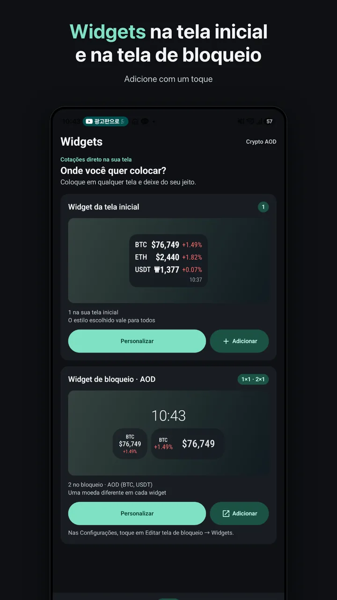

Como ver o preço do Bitcoin na tela de bloqueio e no AOD do Galaxy
Quem acompanha cripto conhece o ritual: pegar o celular, desbloquear, abrir o app da corretora, esperar carregar, tudo isso só para ver quanto está o Bitcoin. No Galaxy dá para pular esse caminho e deixar a cotação direto na tela de bloqueio e no Always On Display (AOD), aquela tela que mostra o relógio mesmo com o celular apagado.
Eu sou o desenvolvedor do Crypto AOD, um app que faz exatamente isso. Escrevi este guia porque quase todo tutorial em português fala de widgets na tela de bloqueio de forma geral, e quase nenhum fala de cotação. Abaixo estão o que o Galaxy permite, os caminhos possíveis e o passo a passo. A primeira metade serve mesmo para quem não vai usar o meu app.
O que você precisa antes de começar
- Um Samsung Galaxy com One UI 7 ou mais recente. Os widgets da tela de bloqueio e do AOD de que este guia trata dependem dessa versão.
- Um app de cotação que ofereça widget para a tela de bloqueio. Não basta ter widget na tela inicial: na lista da tela de bloqueio só aparecem widgets feitos para os espaços pequenos que a Samsung reserva ali.
- O Always On Display ligado, se você quer ver o preço com a tela apagada.
Três caminhos para ter cotação na tela de bloqueio
| Caminho | Como funciona | Bom saber |
|---|---|---|
| App com widget próprio para a tela de bloqueio | O app cria um widget nos espaços nativos da tela de bloqueio da Samsung | Não precisa de nenhum app extra. Só dois tamanhos: 1×1 e 2×1 |
| Good Lock (módulo LockStar) | Muitos tutoriais usam esse app da Samsung para levar widgets da tela inicial para a tela de bloqueio | É instalado à parte pela Galaxy Store. A disponibilidade pode variar conforme o país e o modelo |
| Widget do app da sua corretora | Se o app que você já usa tem widget, ele pode servir | Confira se ele aparece na lista de widgets da tela de bloqueio. Se não aparecer, fica só na tela inicial |
Neste guia eu sigo o primeiro caminho, que funciona direto no editor da tela de bloqueio do One UI, sem módulos extras.
Os limites dos widgets na tela de bloqueio da Samsung
Antes de escolher o app, vale entender o espaço que você tem:
- Só dois tamanhos. Os espaços da tela de bloqueio aceitam widgets 1×1 (pequeno) e 2×1 (retangular). Não existe 3×1 nem 4×1 ali, então esqueça uma lista com cinco moedas na tela de bloqueio. Para lista, use a tela inicial.
- Pouco espaço para texto. O 1×1 é bem pequeno. Moedas com preço de muitos dígitos costumam ficar mais legíveis no 2×1.
- O fundo não é do app. Aquela pílula translúcida atrás do widget é desenhada pelo próprio One UI, segue o tema da tela de bloqueio e não tem opção para desligar.
- Não é segundo a segundo. Widgets atualizam em intervalos. O mais curto que o Crypto AOD usa é 1 minuto.
Passo a passo com o Crypto AOD
1. Adicione a moeda no app
Instale o Crypto AOD na Google Play e abra a aba Moedas → Adicionar moeda. Escolha uma das sete corretoras (Upbit, Bithumb, Binance, Coinbase, OKX, Bybit e Kraken) e busque pelo nome, pelo símbolo ou pelo par, por exemplo BTC ou ETH. Dá para filtrar pela moeda de cotação: USDT, USD, EUR, KRW, BTC e outras.
No plano grátis você acompanha 1 moeda, e ela vale para todos os widgets.

2. Abra o editor da tela de bloqueio
A Samsung descreve dois jeitos nas páginas de suporte do Brasil:
- Toque e segure a tela de bloqueio (o aparelho pode pedir para desbloquear) e procure Adicionar widgets. Os passos estão em Descubra novos recursos da tela de bloqueio.
- Abra Configurações → Papel de parede e estilo, selecione a tela de bloqueio atual e toque em Adicionar widgets, como mostra a página Widgets Brief na tela de bloqueio.
Há ainda o caminho por Configurações → Tela de bloqueio e AOD → Editar tela de bloqueio → Widgets (o nome dos itens pode variar conforme o aparelho e a versão do One UI). O botão Adicionar à tela de bloqueio · AOD, dentro do app, leva você até essa tela de configurações. O app não consegue abrir o editor da Samsung diretamente, porque o sistema não permite isso a apps comuns, então o último toque é seu.
3. Coloque o widget
Na lista de widgets, procure Crypto AOD. Você vai ver duas opções:
- Crypto AOD · Tela de bloqueio 1×1: compacto, bom para uma moeda de preço curto.
- Crypto AOD · Tela de bloqueio 2×1: mais largo, cabe preço e variação com folga.
Se aparecer a tela Moeda a exibir neste widget, escolha a moeda. Se não aparecer, tudo bem: dá para escolher depois na aba Widget do app, na lista de widgets já posicionados. Toque em Concluído para salvar a tela de bloqueio.
Se o preço não couber na largura, o app ajusta o tamanho do texto e pode abreviar números grandes.
4. Ligue o Always On Display
O AOD fica em Configurações → Tela de bloqueio e AOD → Always On Display (o nome pode variar conforme o aparelho). Atenção a um detalhe que confunde muita gente: segundo a página da Samsung sobre otimização da bateria, quando a Economia de energia está ativada, recursos como o Always On Display são desativados. Se o AOD sumiu de repente, comece por aí.
5. Escolha o intervalo de atualização
Na aba Configurações do app, em Intervalo de atualização:
| Intervalo | O que precisa |
|---|---|
| 1 minuto | Exceção de otimização de bateria e permissão de alarmes e lembretes |
| 5 minutos | Exceção de otimização de bateria e permissão de alarmes e lembretes |
| 15 minutos | Nenhuma permissão extra |
Quer o preço agora, sem esperar o próximo ciclo? Toque no widget: ele mostra "Atualizando…" e busca a cotação na hora, sem abrir o app. Se a atualização falhar ou você estiver sem internet, o widget mantém o último preço e o horário em que ele foi obtido.
Se a cotação parar de atualizar
O culpado mais comum é a suspensão de apps da Samsung. Se você passar uns três dias sem abrir o app, o Galaxy pode colocá-lo em suspensão e as atualizações em segundo plano param. Para evitar, a Samsung indica este caminho na página de otimização da bateria:
- Abra Configurações → Assistência do aparelho → Bateria.
- Toque em Limites de uso em segundo plano.
- Toque em Apps nunca suspensos automáticos.
- Toque em +, selecione o Crypto AOD e toque em Adicionar.
Isso vale para qualquer app de widget, não só para o meu. A aba Configurações do Crypto AOD também mostra esse passo a passo.
Dá para personalizar o widget da tela de bloqueio?
Um pouco, dentro do que a Samsung deixa. Você define o tamanho de cada elemento (símbolo, preço e variação) ou esconde o que não quer ver. A direção do preço aparece com ▲ e ▼. O fundo e as cores seguem o tema da tela de bloqueio do One UI, então não há como trocar a cor ali.
Já o widget da tela inicial é bem mais flexível: mostra até 5 moedas em lista, com símbolo, preço, variação do dia e horário da última atualização, e tem cinco temas (escuro clássico, claro, vidro, texto grande e minimalista), além de cor e opacidade do fundo, cantos e a convenção de cores da variação.

Grátis ou Premium
- Grátis: 1 moeda, em todos os widgets (tela de bloqueio, AOD e tela inicial).
- Premium: até 5 moedas, pagamento único, sem assinatura. Depois de instalar, você tem 7 dias de teste grátis.
O app não pede conta nem login, não tem anúncios e não usa rastreamento. Sua lista e o visual dos widgets ficam no seu aparelho.
Perguntas rápidas
Funciona em outros celulares Android?
O widget da tela inicial funciona. Os widgets da tela de bloqueio e do AOD dependem do One UI 7 ou mais recente, então são só para Galaxy.
Mostra ações da bolsa?
Não. O app mostra apenas criptomoedas.
Dá para comprar ou vender pelo app?
Não. O Crypto AOD só exibe cotações, sem ordens nem transferências. Os preços vêm da API pública de cada corretora e são apenas informativos. Nada aqui é recomendação de investimento.
O Crypto AOD é um app independente, sem vínculo com a Samsung nem com as corretoras citadas. Se algo neste guia não bater com o seu aparelho, me escreva em support@lalatap.kr contando o modelo e a versão do One UI.